합금 설계 (Alloy design)
Arc/induction-melting and melt-spinning facilities for ferritic steels, Ni-based superalloys, Mg-, Ti-, Al-based alloys, HEA and BMG alloy systems.
장비와 연구 인프라 (Facilities)
합금 제조, 열처리, 미세조직 분석, 기계적 특성 평가를 위한 연구 인프라입니다. Facilities support alloy fabrication, heat treatment, characterization, and mechanical testing.
장비 (Facilities)
합금 설계, 미세조직 분석, 기계적 특성 평가, 중성자 분석을 연계합니다.
장비 사진 (Facilities Gallery)
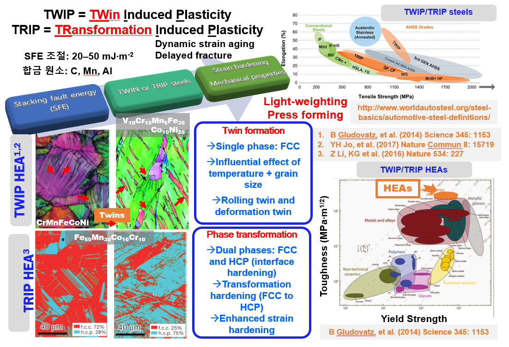
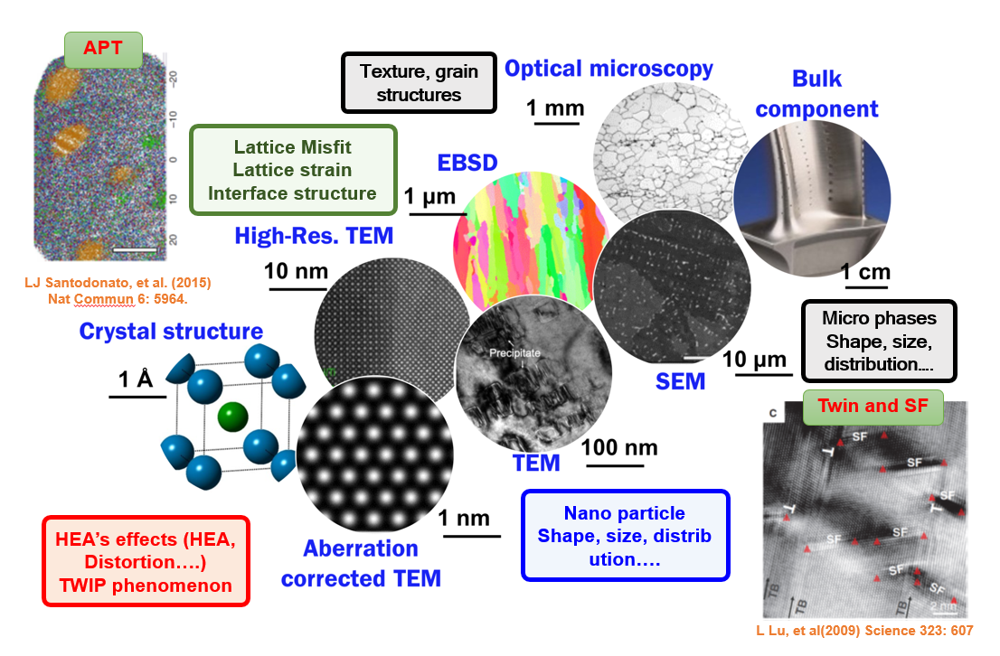
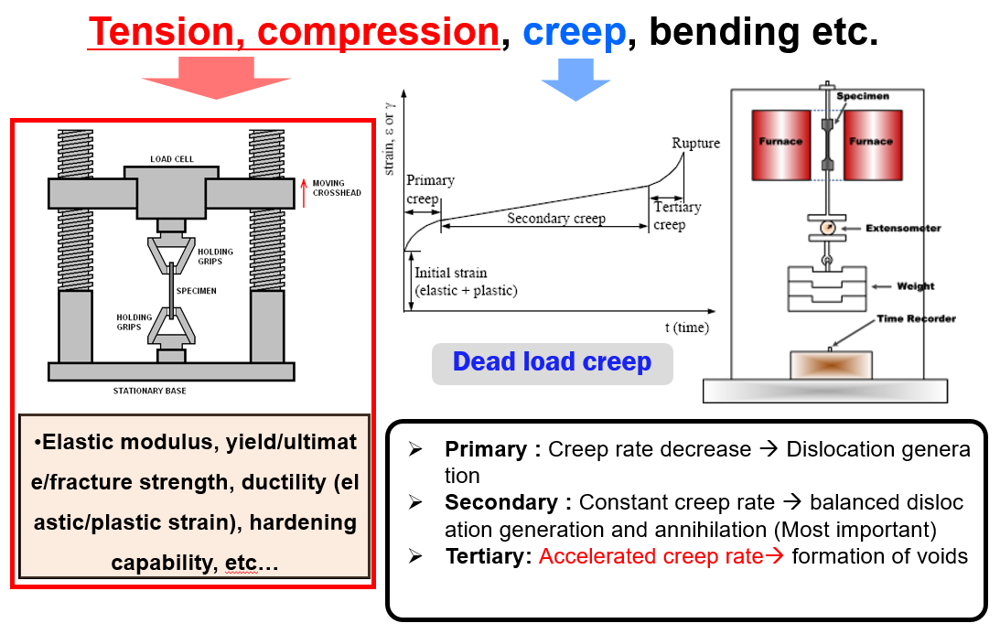
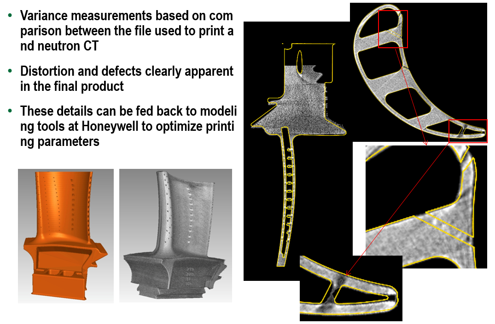
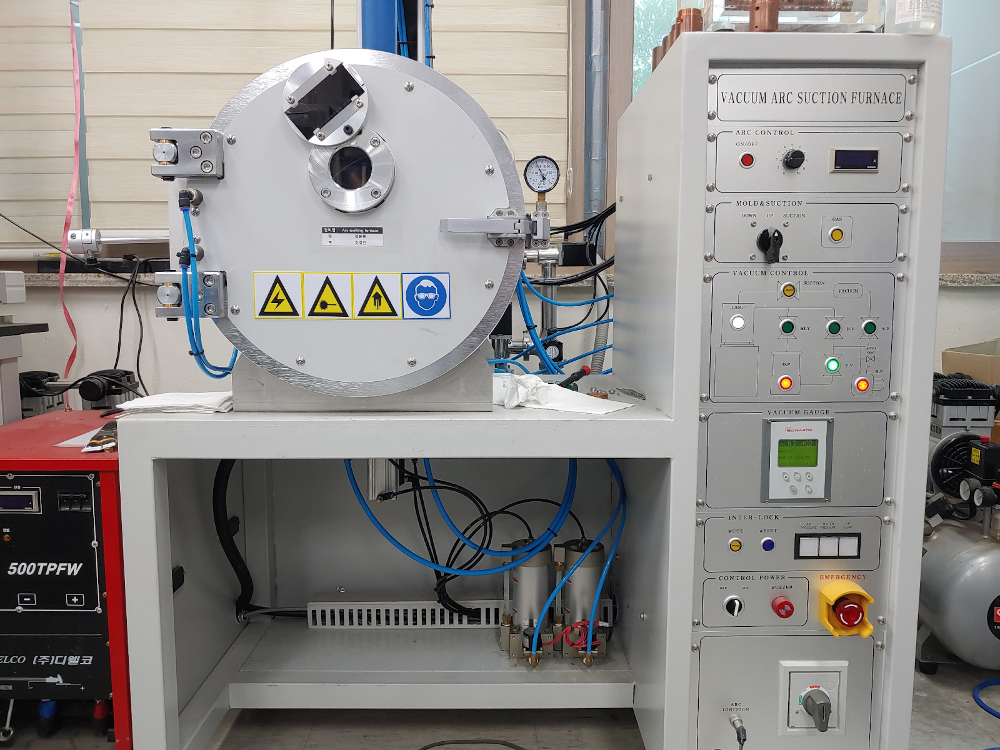
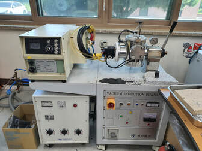
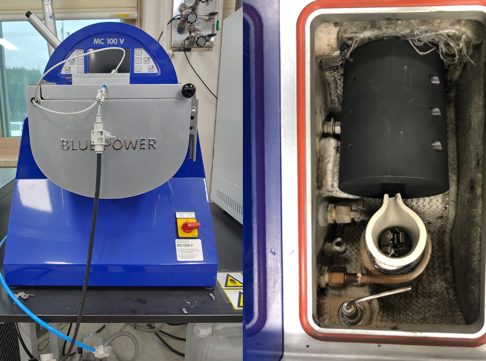
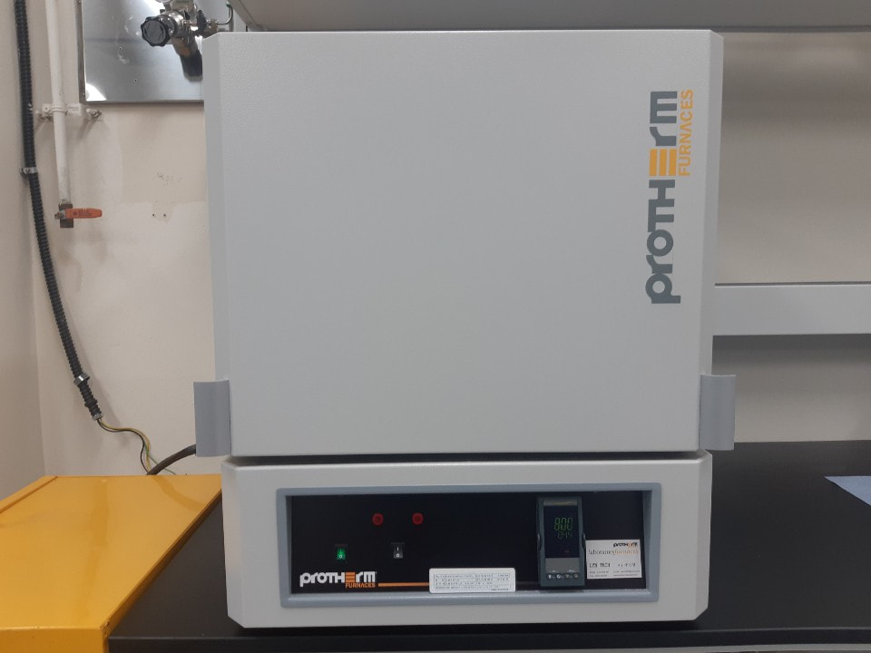
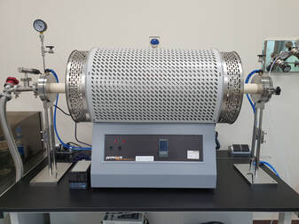
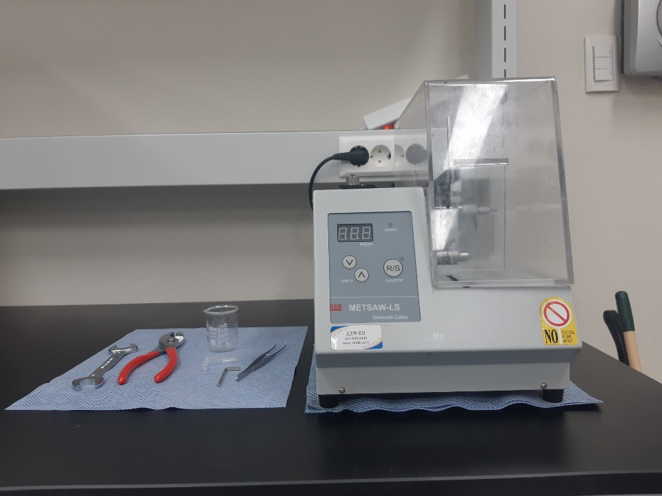
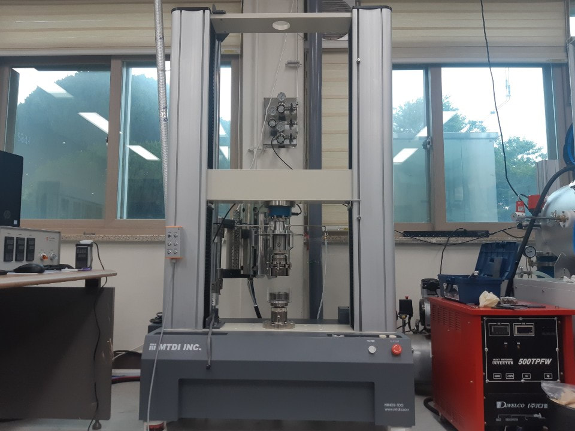
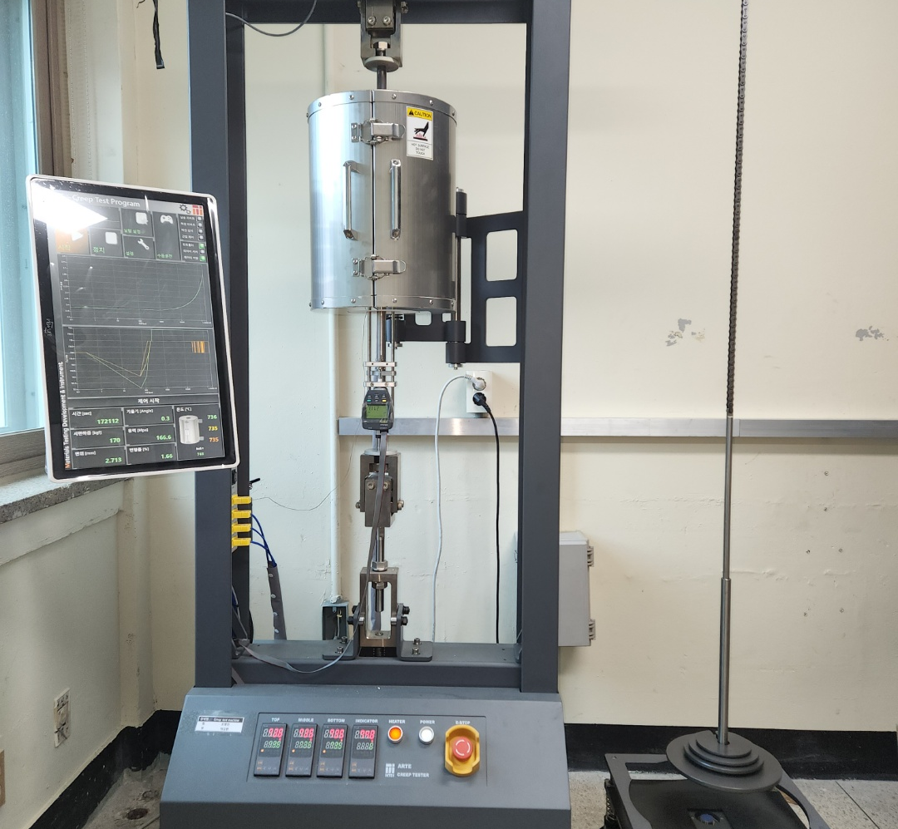
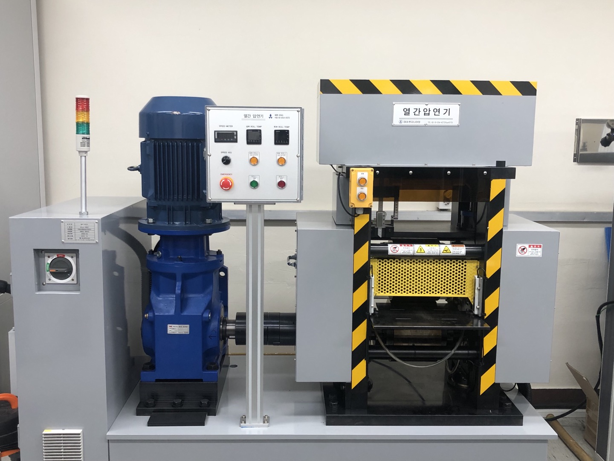
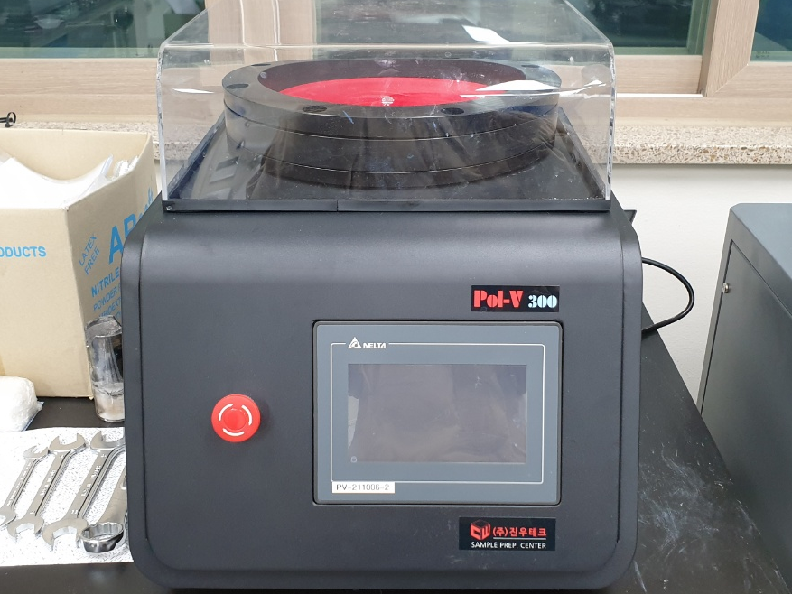